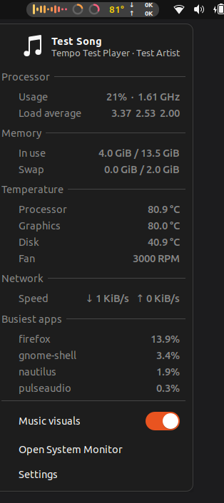

Tempo › Fans
See your fans, and start them sooner
Tempo lists every fan your computer reports, with its speed. And if your fans start too late (some laptops wait until 90 °C), the optional fan control gives them a cooler curve and a mode switch in the menu.
- Free and open source
- GNOME 42 to 51 on Ubuntu, Fedora, Debian, Arch and more
- 250 KB, nothing else installed

What you get
- Every fan, by name: processor, case, graphics card and laptop fans, up to four, each with its speed. Empty connectors are left out.
- A fan you can watch: in the floating system panel a little fan turns while the real one does, faster as it speeds up. More about the panels.
- Optional fan control with three modes in the menu: Cool (30 % below 60 °C, rising evenly to full speed at 85 °C), Full speed, and Automatic (hands off).
- Made for laptops that wait too long. A Dell Inspiron 3505 keeps its fan off until about 90 °C; with fan control it starts at 70 °C and stays on until the laptop is back below 58 °C, so it does not flicker on and off.
- Works on desktop motherboards (Nuvoton, ITE and Fintek chips), AMD graphics cards, Dell, ASUS and Framework laptops, ThinkPads after one setting, and fan hubs. Fans Linux can only read are shown, not controlled.
- Safe by design: when the service stops for any reason every fan goes back to the computer's own control, an unreadable temperature counts as hot, and a hot laptop's fan is never switched off when it is handed back.

What it costs your computer
Fan control is a few lines of bash that run as a system service. Tempo itself works without it.
| Fan speeds in the menu | Read only while the menu is open |
| The little fan in the system panel | 0.7 % of one core, only while the real fan turns |
| The fan control service | No measurable processor use, about 5 MB of memory |
The service reads one temperature every 5 seconds and writes a fan setting only when it should change. It starts no other programs while it runs. How Tempo stays light.
Turn it on
- Install Tempo with the buttons above. The fan speeds are in its menu straight away.
- For fan control, click Tempo, open Settings, scroll to Fan control and press Install. GNOME asks for your password once, because fans can only be driven with administrator rights. A copy installed through extensions.gnome.org has no Install button; the install guide has two commands that do the same.
- Choose the mode under Fan mode in Tempo's menu. The same Settings button removes fan control again.
Questions
My laptop fan does not spin until it is very hot. Is it broken?
Often not. Some laptops are set up by their maker to keep the fan off until about 90 °C. If the fan runs during start-up and Tempo shows a speed when the laptop is hot, the fan is fine and only starts late. Tempo's optional fan control can start it sooner.
Is it safe to control fans from Linux?
Tempo's fan control is built to fail safe: when it stops for any reason every fan goes back to the computer's own control, a temperature it cannot read counts as hot, and a fan that nothing else looks after is never stopped. It is tested against simulated fan hardware on every change.
Which computers does fan control work on?
Any computer where Linux can set the fan speed through its standard interface: most desktop motherboards, AMD graphics cards, Dell, ASUS and Framework laptops, and ThinkPads after adding fan_control=1. The installer lists what it found before it changes anything, and installs nothing if there is nothing to control.
How do I see my fan speed on Linux?
Install Tempo and click it: the menu lists every fan the computer reports with its speed in RPM. No terminal and no lm-sensors setup is needed.
Can I remove fan control again?
Yes: Settings, Fan control, Remove. Every fan goes straight back to the computer's own control, and Tempo keeps working without it.
Also in Tempo
Tempo is one small GNOME Shell extension. Every part has its own switch, and a part that is off costs nothing.
System monitor
CPU and memory as two small rings, with the details one click away.
Internet speed
Download and upload speed in the top bar, in a width that never changes.
Music visualizer
Bars that move with your music, in the top bar or floating on the desktop.
CPU temperature
The processor's temperature in the top bar, amber and red when it gets hot.
Desktop widgets
Floating panels for your desktop: system readings and a music visualizer.